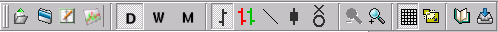
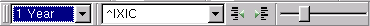

Main Toolbar
Description
The most used Qtstalker functions are found here in the main toolbar. From
left to right they are:
- Work with Charts
- Work with Groups
- Work with Portfolios
- New Indicator
- Daily Compression
- Weekly Compression
- Monthly Compression
- Bar Chart
- Paint Bar Chart
- Line Chart
- Candlestick Chart
- Point and Figure Chart
- Decrease Bar Spacing
- Increase Bar Spacing
- Grid
- Scale to Screen
- Data Window
- Quotes

Navigate Toolbar
Description
This toolbar has grouped together most of the chart navigation functions.
From left to right they are:
- The number of bars to load at a time for every chart displayed. The
following amounts are available:
- 3 months
- 6 months
- 9 months
- 1 year
- 2 years
- 5 years
- all bars
- The symbols that belong to the currently loaded group. Use this to jump
around the group.
- Display the previous chart in the currently loaded group.
- Display the next chart in the currently loaded group.
- Bar slider allows you to shift the chart left or right depending on how
many bars are loaded. It behaves like a scrollbar but less invasive.
